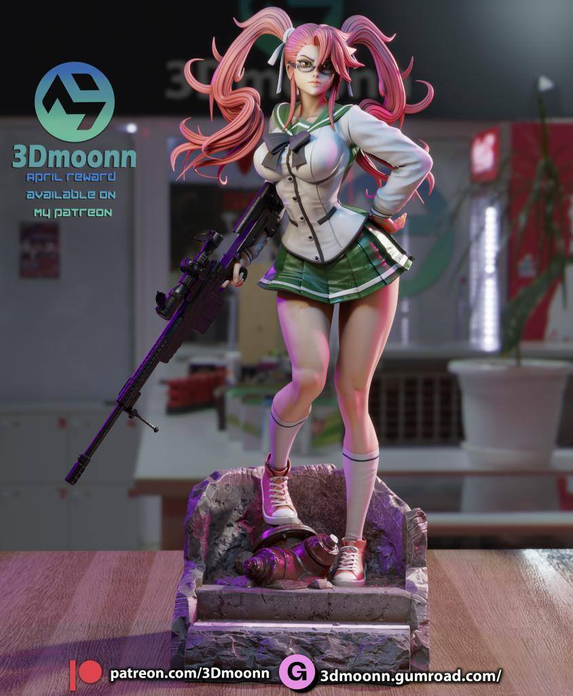
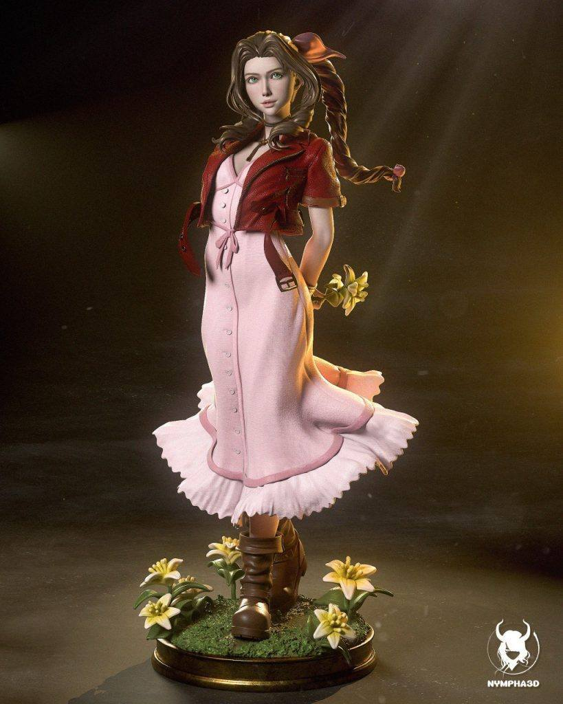
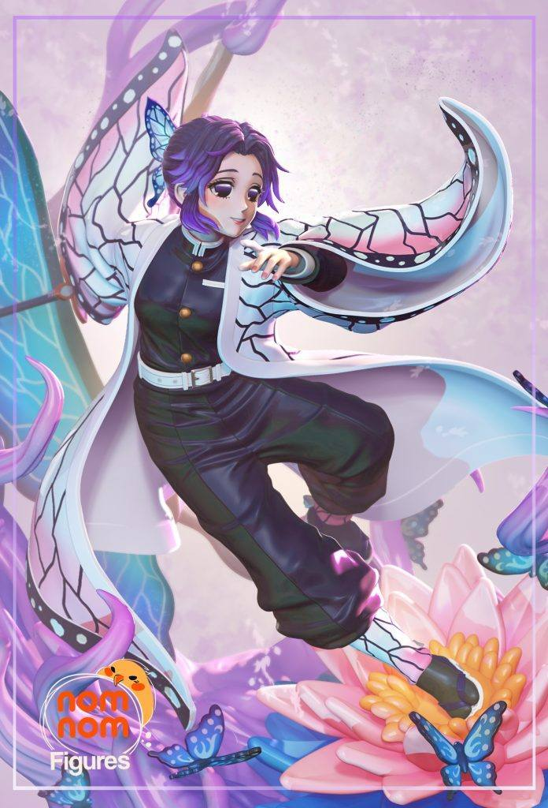
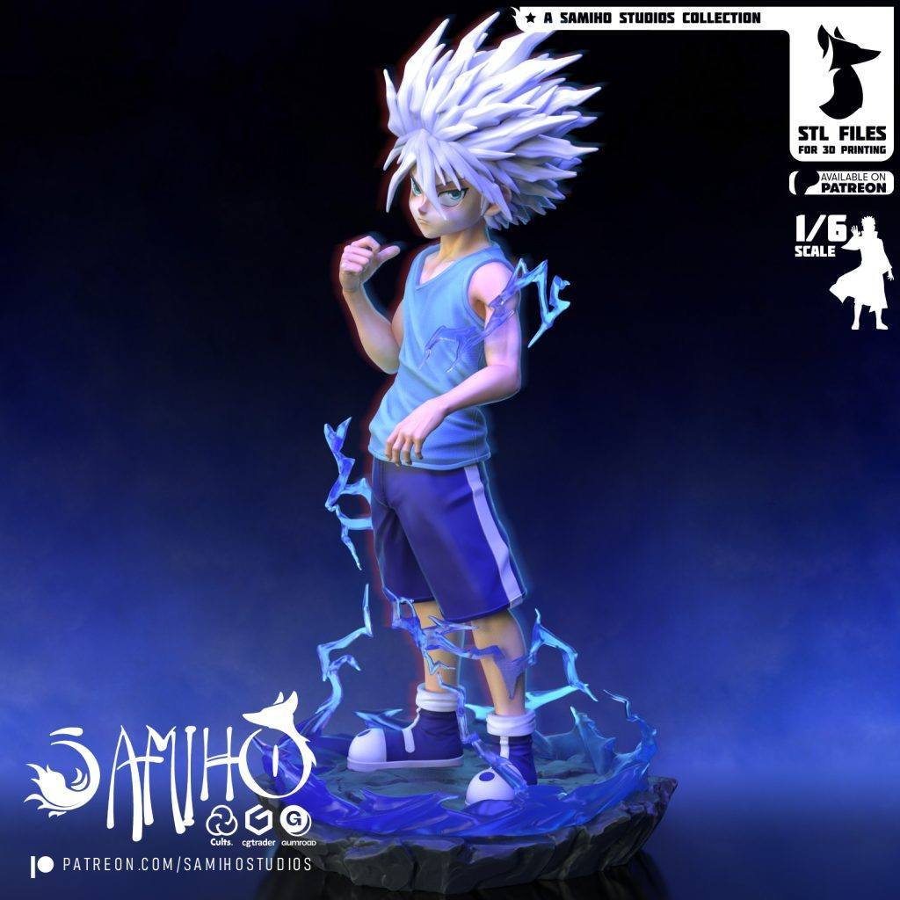

2025年05月14日STl图纸文件分享
提取码
xuzp今天分享八组模型，涵盖多个经典角色与风格：飞影造型凌厉，特征鲜明；死神卯之花还原度高，气质柔中带刚；奇牙分件清晰，适合涂装练习；大胆党场景延续精良水准，动态表现力强；爱丽丝（最终幻想）华丽梦幻，服饰细节丰富；虫柱优雅灵动，是《鬼灭之刃》粉丝的好选择；高城沙耶造型青春，适合动画风展示；蒂德莉特则是经典奇幻风格，披风与武器细节表现优秀。




链接: https://pan.baidu.com/s/1qI2t0glUv1PnnNr_qcpbKA 提取码: xuzp
以上内容仅供个人使用（非商用）
ONLY for PERSONAL (NON-COMMERCIAL) use.
加群获得更多免费模型！